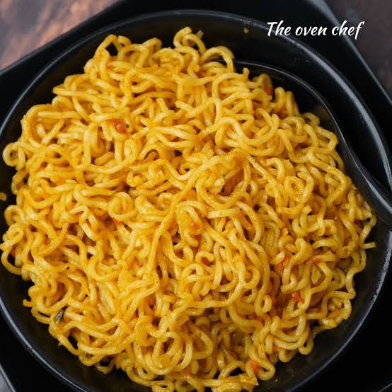

Maggie

Description
Masala Maggi is a beloved twist on the classic instant noodle dish. It enhances the noodles with a flavorful, spiced base of sautéed onions, tomatoes, and mixed vegetables, perfectly blending comfort and convenience in under 10 minutes.
ingredients
- Maggi
- Water
- Oil or Butter
- Aromatics
- Vegetables
- Spices (Optional)
Procedure
- Sauté: Heat 1 tsp oil/butter. Sauté ginger-garlic, chilies, and onions for 2 minutes.
- Add Veggies: Toss in chopped tomatoes, carrots, peas, and capsicum. Cook for 2 minutes.
- Boil: Pour \(1 \frac{1}{2}\) cups water and the Maggi Tastemaker. Bring to a boil.
- Cook: Add broken noodles. Simmer for 2-3 minutes until the water absorbs.
- Serve: Garnish with coriander and serve hot.
back